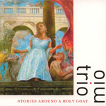

Spiller lige nu

Kære bruger - det lader desværre til at JavaScript er slået fra i din browser - og FolkRadio.dk kan ikke fungere uden. Du kan stædigvek lytte til radioen ved hjælp af direkte streaming - du kan benytte enten vores mp3 stream, eller ogg stream.